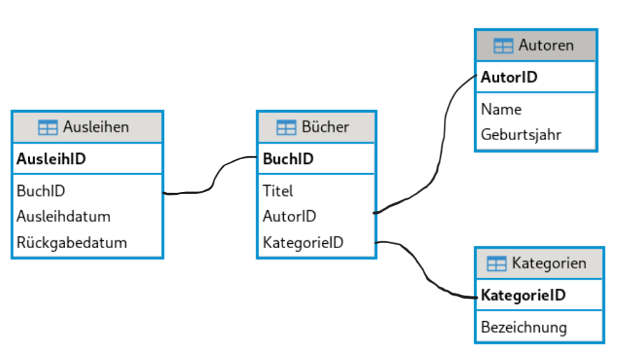

Lösung
%load_ext sql
%sql sqlite:///buecherei.db %load_ext sql
%sql sqlite:///buecherei.dbGegeben ist folgendes Entity-Relationship-Modell (ERM) zu der Stadtbücherei-Datenbank.

Die Datenbankdatei kann man hier downloaden.
%%sql
SELECT * FROM Autoren;%%sql
SELECT Titel, Ausleihdatum FROM Bücher, Ausleihen WHERE Bücher.BuchID = Ausleihen.BuchID AND Ausleihdatum LIKE '2024%';%%sql
SELECT * FROM Kategorien WHERE Bezeichnung LIKE 'Fiktion%';%%sql
SELECT * FROM Bücher ORDER BY Titel ASC;%%sql
SELECT * FROM Autoren WHERE Geburtsjahr > 1980;%%sql
SELECT Bücher.Titel, Autoren.Name
FROM Bücher, Autoren
WHERE Bücher.AutorID = Autoren.AutorID;%%sql
SELECT Bücher.Titel, Kategorien.Bezeichnung
FROM Bücher, Kategorien
WHERE Bücher.KategorieID = Kategorien.KategorieID
AND Kategorien.Bezeichnung = 'Fantasy';%%sql
SELECT Bücher.Titel, Ausleihen.Ausleihdatum
FROM Ausleihen, Bücher
WHERE Ausleihen.BuchID = Bücher.BuchID;%%sql
SELECT Bücher.Titel
FROM Bücher, Autoren
WHERE Bücher.AutorID = Autoren.AutorID
AND Autoren.Name = 'Max Mustermann';%%sql
SELECT Bücher.Titel, Autoren.Name, Ausleihen.Ausleihdatum
FROM Ausleihen, Bücher, Autoren
WHERE Ausleihen.BuchID = Bücher.BuchID
AND Bücher.AutorID = Autoren.AutorID;
%%sql
SELECT Bücher.Titel, Kategorien.Bezeichnung, Autoren.Name
FROM Bücher, Kategorien, Autoren
WHERE Bücher.KategorieID = Kategorien.KategorieID
AND Bücher.AutorID = Autoren.AutorID;%%sql
SELECT Bücher.Titel, Kategorien.Bezeichnung, Autoren.Name
FROM Bücher, Kategorien, Autoren
WHERE Bücher.KategorieID = Kategorien.KategorieID
AND Bücher.AutorID = Autoren.AutorID
AND Autoren.Name = 'Lisa Koch'
AND Kategorien.Bezeichnung = 'Kinderbuch'%%sql
SELECT Bücher.Titel, Ausleihen.Ausleihdatum
FROM Ausleihen, Bücher
WHERE Ausleihen.BuchID = Bücher.BuchID
AND Ausleihen.Ausleihdatum > '2024-03-01';%%sql
SELECT Bücher.Titel, Ausleihen.Ausleihdatum
FROM Ausleihen, Bücher
WHERE Ausleihen.BuchID = Bücher.BuchID
AND Ausleihen.Ausleihdatum LIKE '2024-03%';%%sql
SELECT * FROM Autoren WHERE Name LIKE 'T%';%%sql
SELECT Bücher.Titel
FROM Bücher, Autoren
WHERE Bücher.AutorID = Autoren.AutorID
AND Autoren.Geburtsjahr > 1990;Die bestehende Datenbank für die Bibliothek umfasst die Tabellen Autoren, Kategorien, Bücher und Ausleihen. Um die Funktionalität der Datenbank zu erweitern, soll eine neue Tabelle namens Ausleihstelle hinzugefügt werden. Diese Tabelle soll Informationen über die verschiedenen Ausleihstellen in der Bibliothek enthalten, an denen die Bücher ausgeliehen werden können.
Die neue Tabelle Ausleihestelle soll folgende Spalten enthalten:
Zeichnen Sie das erweiterte Entity-Relationship-Modell (ERM), das die neue Tabelle Ausleihestelle integriert. Stellen Sie sicher, dass die Beziehungen zwischen der neuen Tabelle und den bestehenden Tabellen klar dargestellt sind.
Beziehungen: Definieren Sie die Beziehungen zwischen der Tabelle Ausleihestelle und den bestehenden Tabellen. Überlegen Sie, wie die Ausleihstellen mit den Ausleihen verknüpft werden können.
{kind=link}